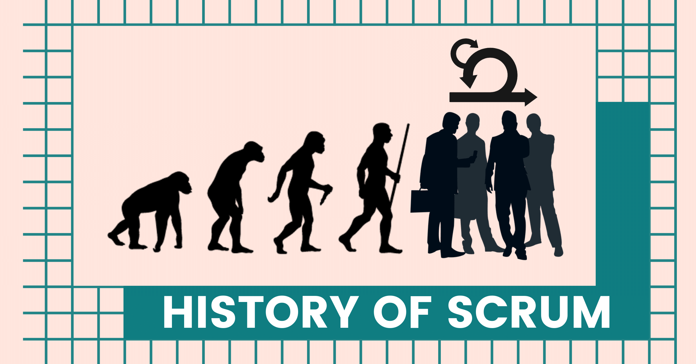
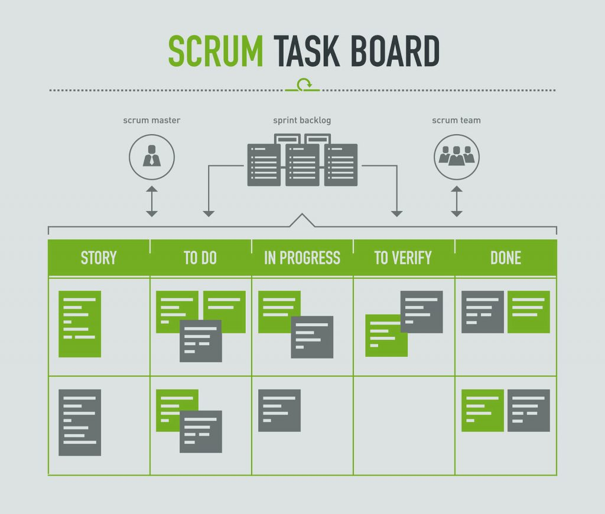
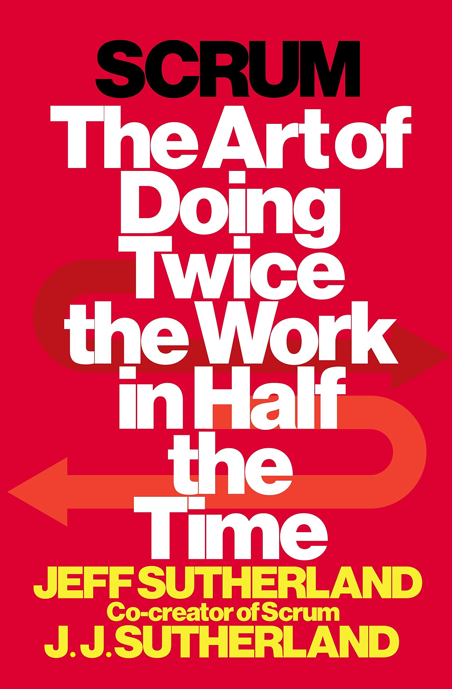
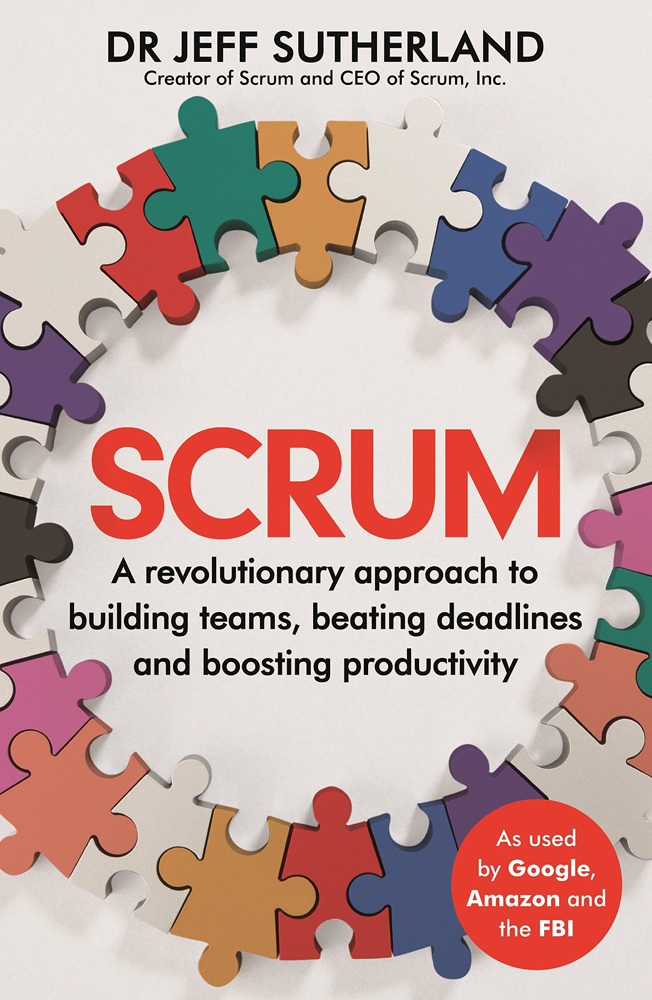
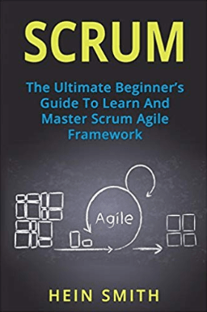

4 Values of Agile:
- Individuals and interactions over processes and tools.
- Working software over comprehensive documentation.
- Customer collaboration over contract negotiation.
- Responding to change over following a plan.

Greater stakeholder engagement and collaboration
Predictable costs and scheduling
Flexibility amidst change
Higher quality products
Reduced risk and faster ROI
Agile methodology examples:
- Scrum
- Kanban
- Extreme Programming (XP)
- Feature Driven Development
WHAT IS SCRUM?
A brief History on Scrum

Scrum Roles:
- ScrumMaster
- Product Owner
- Team
Scrum Artifacts:
- Product Backlog
- Sprint Backlog
- Increment

Learn from the Community


